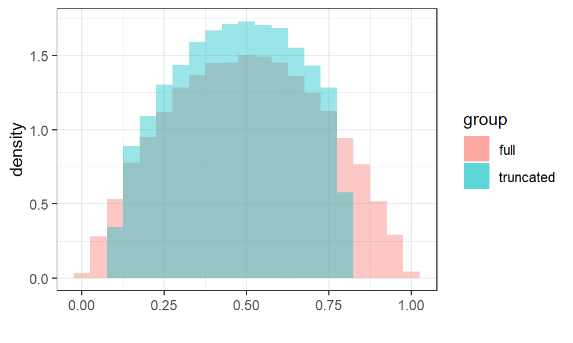
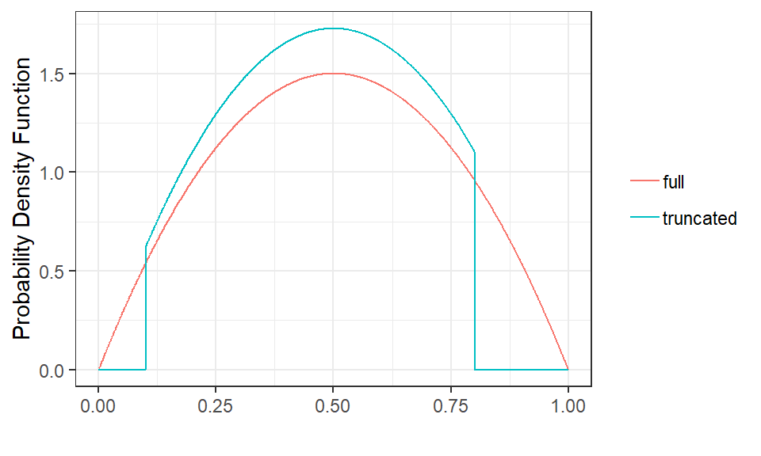
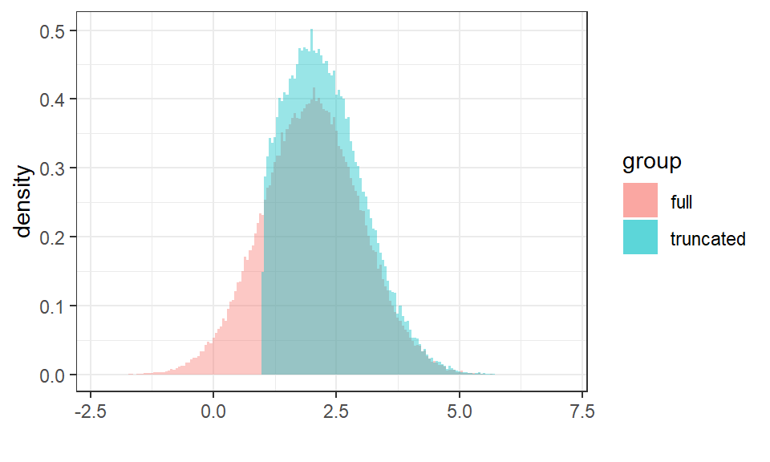
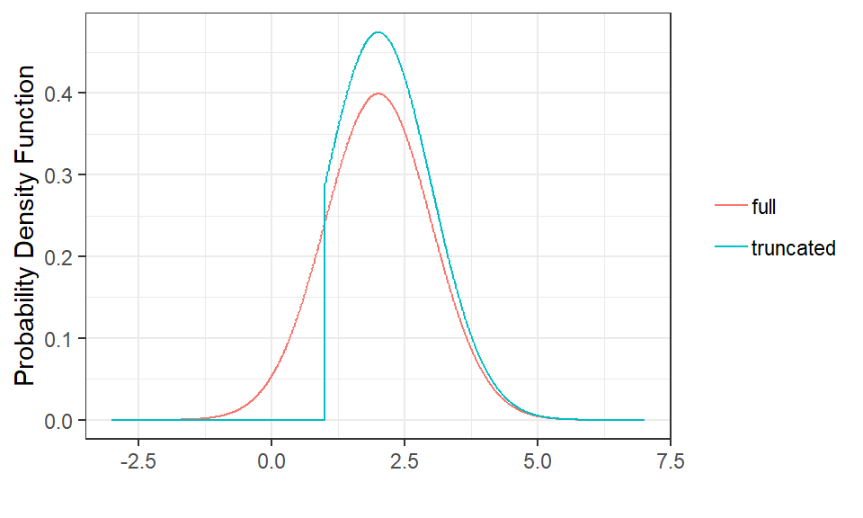

truncateddistributions.RmdN <- 100000
set.seed(1976)
dat <- data.frame(x1 = c(rbeta(N, 2, 2), rtbeta(N, 2, 2, 0.1, 0.8)),
group = rep(c("full","truncated"), each = N))
ggplot(subset(dat, group == "full"),
aes(x = x1, y = ..density.., fill = group, group = group)) +
geom_histogram(binwidth = 0.05, alpha = 0.4) +
geom_histogram(aes(x = x1, y = ..density.., fill = group, group = group),
data = subset(dat, group == "truncated"),
binwidth = 0.05, alpha = 0.4) +
theme_bw() +
xlab("")
x <- seq(0, 1, length = 1000)
dat <- data.frame(x1 = c(x, x),
y = c(dbeta(x, 2, 2), dtbeta(x, 2, 2, 0.1, 0.8)),
ycdf = c(pbeta(x, 2, 2), ptbeta(x, 2, 2, 0.1, 0.8)),
yicdf = c(qbeta(x, 2, 2), qtbeta(x, 2, 2, 0.1, 0.8)),
group = rep(c("full","truncated"), each = length(x)))
ggplot(dat, aes(x = x1, y = y, col = group, group = group)) +
geom_line() +
theme_bw() +
xlab("") + ylab("Probability Density Function") +
theme(legend.title = element_blank())
N <- 100000
set.seed(1976)
dat <- data.frame(x1 = c(rnorm(N, 2, 1), rtnorm(N, 2, 1, 1.0, Inf)),
group = rep(c("full","truncated"), each = N))
ggplot(subset(dat, group == "full"),
aes(x = x1, y = ..density.., fill = group, group = group)) +
geom_histogram(binwidth = 0.05, alpha = 0.4) +
geom_histogram(aes(x = x1, y = ..density.., fill = group, group = group),
data = subset(dat, group == "truncated"),
binwidth = 0.05, alpha = 0.4) +
theme_bw() +
xlab("")
x <- seq(-3, 7, length = 1000)
xp <- seq(0, 1, length = 1000)
dat <- data.frame(x1 = c(x, x),
x2 = c(xp, xp),
y = c(dnorm(x, 2, 1), dtnorm(x, 2, 1, 1.0, Inf)),
ycdf = c(pnorm(x, 2, 1), ptnorm(x, 2, 1, 1.0, Inf)),
yicdf = c(qnorm(xp, 2, 1), qtnorm(xp, 2, 1, 1.0, Inf)),
group = rep(c("full","truncated"), each = length(x)))
ggplot(dat, aes(x = x1, y = y, col = group, group = group)) +
geom_line() +
theme_bw() +
xlab("") + ylab("Probability Density Function") +
theme(legend.title = element_blank())